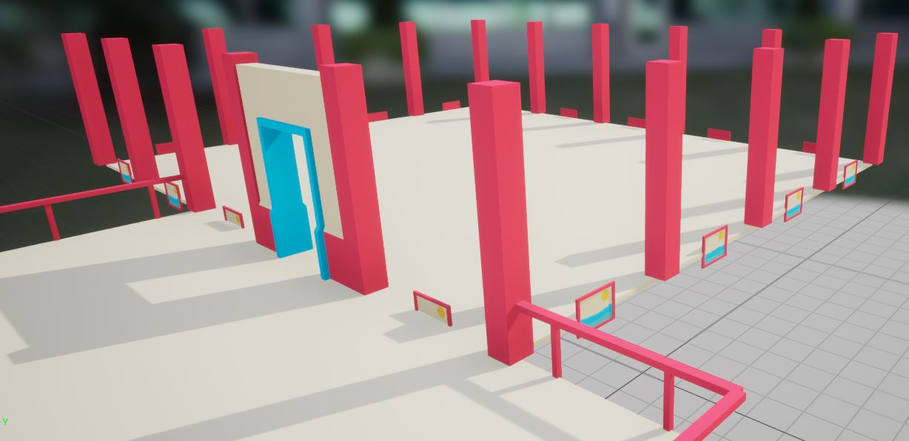
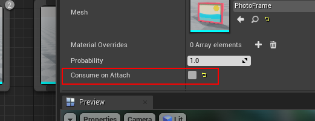

Design your first theme¶
A theme file is a mapping between marker names (like Walls, Ground, Door etc) and the meshes that you provide. The assets you map here will be used to build your dungeon

In the previous section, we created a dungeon with an existing theme file. In this section, we’ll create one ourselves
Create a Theme File¶
Right click on the Content Browser and choose Dungeon Theme
This will create the Dungeon Theme asset. Double click it to open the Theme Editor

Use Sample Assets¶
In the Content Browser, enable plugin contents so we can use sample meshes that come with the plugin to design our theme
Note
You can use any asset you like, but for this tutorial, lets stick with the sample assets
Click View Options button and make sure Show Plugin Content is selected
Navigate to Dungeon Architect Content > Samples > DA_Candy > Meshes. This folder contains a set of meshes we can use for our dungeon
Add Ground Mesh¶
Drag-drop the ground mesh on to the Theme Editor
Link up the mesh node with the Ground marker node. When you do, you should see a live preview on theme editor’s Preview Viewport window


Add Wall Pillars¶
Drag drop the Pillar2 mesh to the theme editor and link it to the WallSeparator marker node
We’ll need to make this pillar a bit bigger. Select the node you just dropped and modify the Scale parameter under Offset category

The live preview should update automatically to show the new scaled pillars
Add Windows¶
We have two wall meshes in the samples folder

The other one (Wall2) has a window. Lets configure the theme to sometimes use this second mesh, so we can have some windows
Drag drop Wall2 mesh on to the theme editor and place it before (left of) the existing wall mesh node

Link them up. The execution index should get updated, indicating their execution order

Notice that the first node has been picked up and all the walls have been replaced with the windowed version

This is because Dungeon Architect starts executing the nodes from left to right. When the condition was satisfied to pick the first node, it stopped execution and never came to the second node.
There are multiple ways you can control this condition, the simplest being adjusting the probablity of selection.
Select the node you just dropped and change the probability to 0.5 (this would mean it gets selected 50% of the time). The other 50% of the time, it would not be selected and the execution would then move to the next node, and hence selecting the non-windowed wall node


Half the walls now have windows¶
Add Wall Decorations¶
There’s a photo frame mesh we’d like to attach to every wall. Drag drop this mesh to the theme editor before the two existing wall nodes and link it to the Wall marker node

This will cause all the walls to disappear and be replaced with this photo frame
This is because once the photo frame node was selected, the execution stopped there and the wall nodes further down the line were not executed.
Selected the photo frame and uncheck the flag “Consume on Attach”. This will cause the execution to continue further even though this node was selected by the theming engine
Lets adjust the offset of the photo frame (position and rotation) to make it properly align with the inner walls
Select the photo frame node and change the Offset’s Position to (0, -22, 200) and Rotation to (0, 0, 180)

The photo frame is aligned now with the walls correctly

Marker Emitters¶
We have an issue with the photo frames. They also spawn near windows

Marker Emitters allow you to emit marker names from any of your dropped mesh nodes. This means, we can define a new marker node (e.g. MyWallDeco) and then emit that marker from the wall node that doesn’t have a window (Wall1 mesh). All our wall decorations can now go under this MyWallDeco marker and it will show up only near solid walls
Right click on an empty area in the theme editor and select Add Marker Node
Select the newly created marker node and change its name to MyWallDeco

Break the link to the photo frame

Connect this under MyWallDeco marker node. All the future wall decorations can also go under this marker

Now emit this marker from the wall node that doesn’t contain a window
Drag a link out of the bottom of the solid wall mesh node and release the mouse in an empty area

Expand the category Marker Emitter in the context menu and select MyWallDeco

This will cause the marker named MyWallDeco to be emitted in the scene whenever the solid wall node is selected, in which case it would then process the nodes defined under it. Now our decorations don’t show up near windows
You can follow the same method to create another type of decoration (e.g. MyWindowDeco) and emit it from under the windowed wall node. In this example, I’ve added a flower pot in the windows


Align with Offset¶
Dungeon Architect can adapt to any modular asset regardless of the mesh pivot position. If the pivots are off, you can always adjust them from the Offset section of the node’s properties
Sometimes, it is difficult to line up the ground node, as there is no point of reference to compare with.
In that case, turn on Debug Draw and build the dungeon.
This is a different ground mesh that has its pivot on the corner instead of the center. We’ll add an offset of position (-200, 0, -200) to fix it and align with the debug drawn boundaries
It is important to first align the ground mesh and then use that as a reference to align your walls and fences. If the ground is not aligned correctly, the rest will also not align (since you will be using an incorrect point of reference for aligning the rest)
Recap¶
In this section we learnt the following:
Probablity - Controls the percentage chance of a node being selected. A value of 1 means 100% selection chance. A value of 0.25 means 25% selection chance
Execution Order - The theme engine executes all the nodes under a marker node from left to right. If it selects a certain node, it stops executing, unless the
Consume on Attachflag is uncheckedMarker Emitters - You can create complex hierarchies with your own marker nodes, giving you more freedom to decorate your dungeons